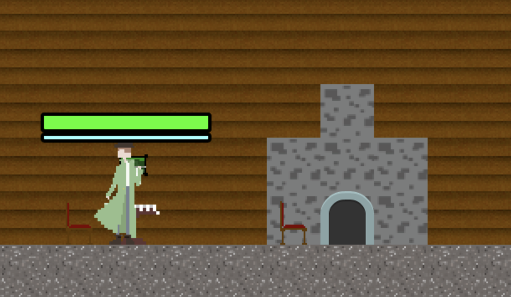

June 2020 - August 2020
I was selected to the Bushnell Performing Arts Center's Digital Design and Production program. Along with eight other high school students, I programmed, and graphically designed a game that we decided to call "The Adventures of Shamrock Sholmes." It's a two-dimensional platformer with a fairytale storyline.
This was my first long-term project, so working with a team provided unique challenges and benefits. The bonus of building this game with a team was the large increase in efficiency of task completion. If I was the only contributor to this project, the timeframe would likely have been more than fourfold what it was.
One of the largest challenges that we experienced was finishing the decision-making process as a team. It took longer than anticipated to plan and storyboard the plot to our game, but we were luckily able to program quickly enough to meet our deadlines.